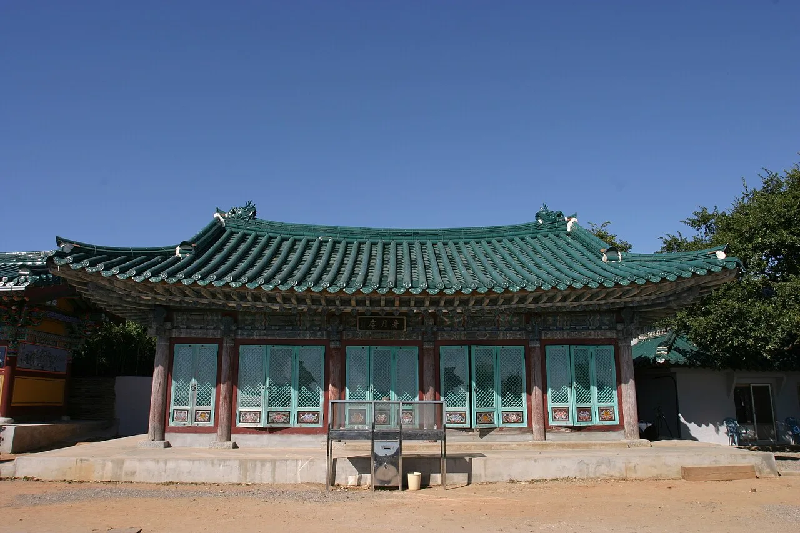
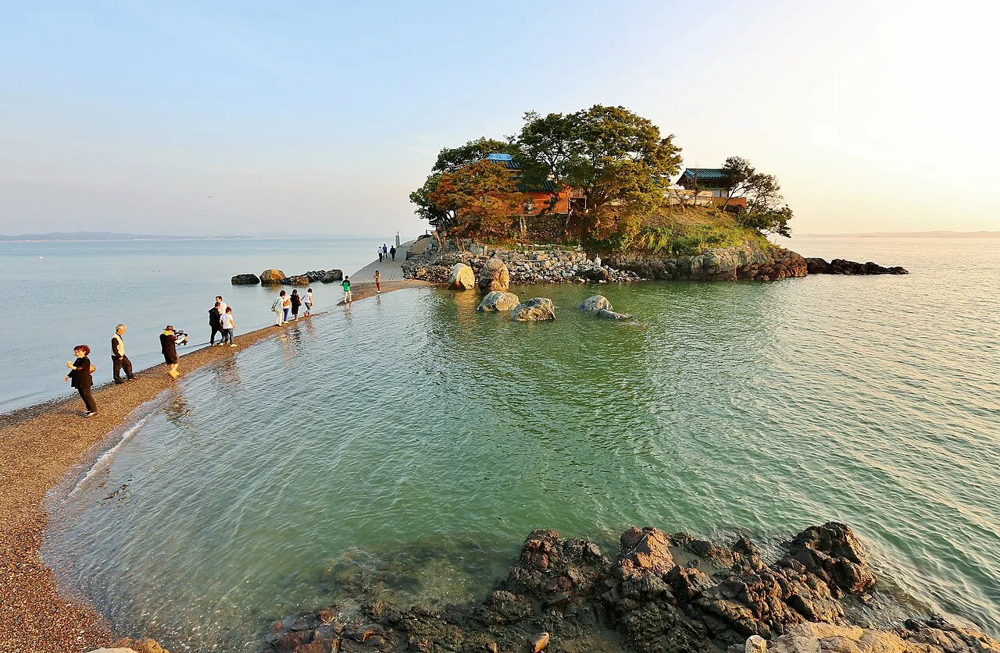
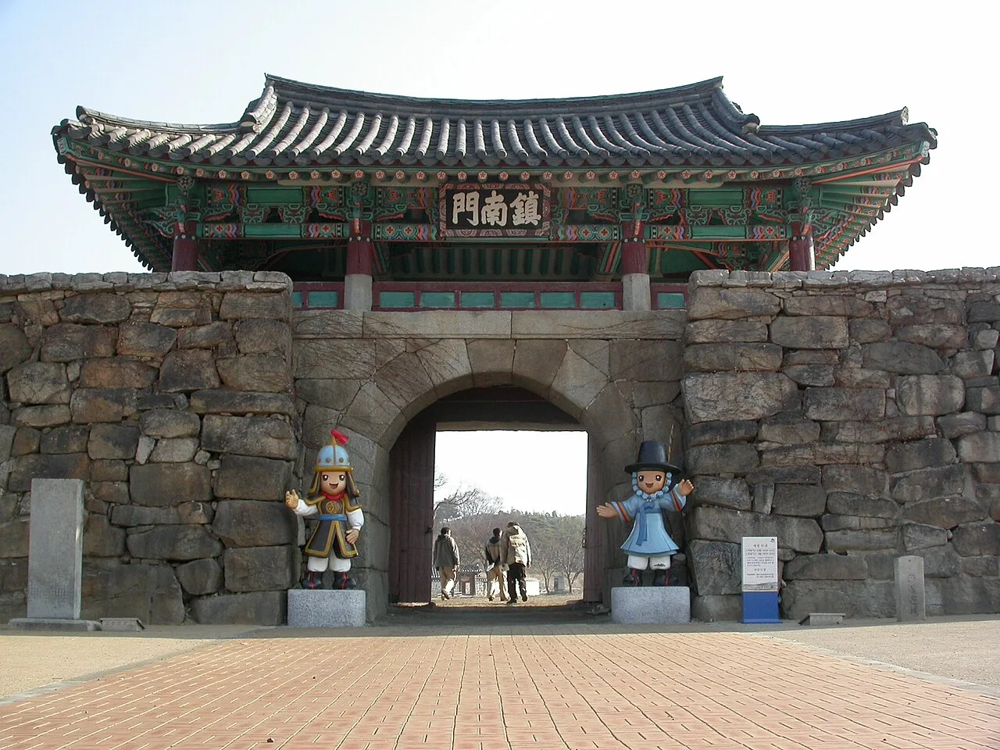
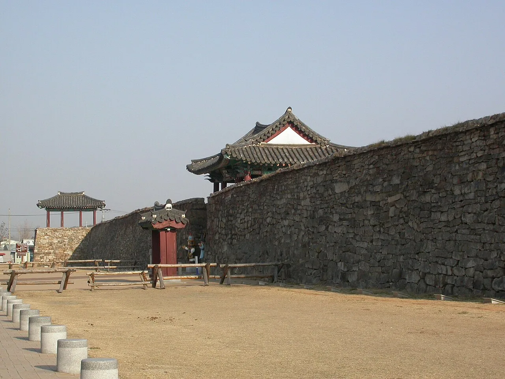
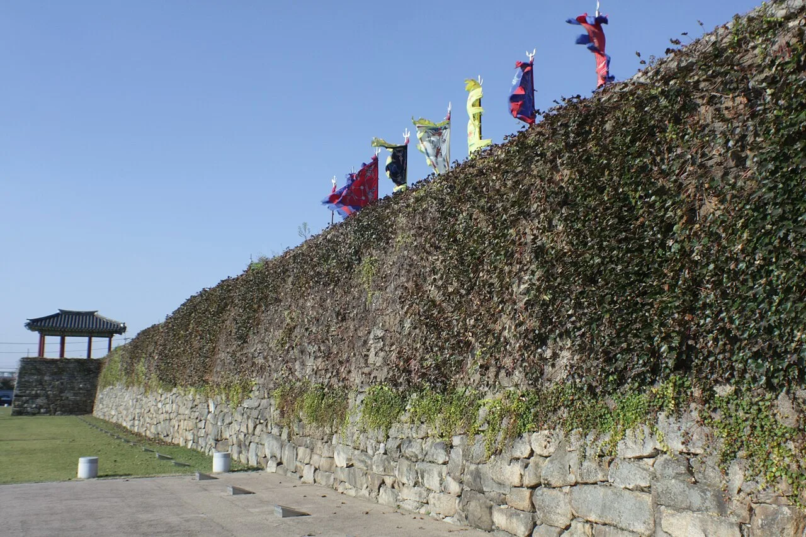
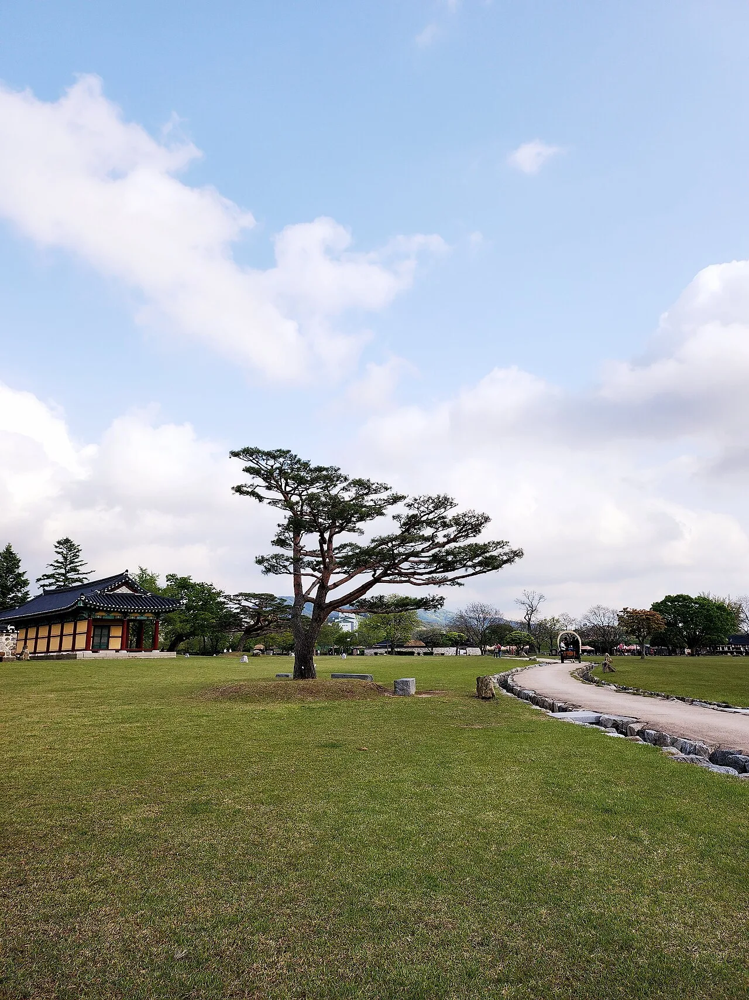

▲ 하늘에서 내려다본 서산 간월암. 밀물 때는 섬, 썰물 때는 육지로 이어지는 작은 암자다
서해안 낙조 명소로 꼽히는 작은 암자가 있다. 서산시 부석면 간월도, 간월암이다. 밀물 때는 바닷물에 둘러싸인 섬이 되고, 썰물 때는 갯벌 위로 육지와 이어진다. 물때를 모르고 갔다가는 발이 묶이거나 반대로 암자 코앞까지 갔다가 건너지 못하고 돌아서는 일이 생긴다. 차로 20분 남짓 거리에는 조선시대 읍성이자 천주교 박해의 아픈 역사를 지닌 해미읍성이 있다. 이 기사는 간월암 물때 확인법부터 해미읍성 볼거리, 두 곳을 잇는 동선까지 정리했다.
미리 보기
- 간월암은 무학대사가 달을 보고 깨달음을 얻었다는 전설이 전하는 서해안 대표 낙조 명소
- 하루 두 번 간조 때만 약 300m 바닷길이 열려, 방문 전 물때 확인이 필수
- 해미읍성은 1417~1421년 축성된 왜구 방어 읍성이자, 병인박해 때 천여 명이 순교한 성지
- 두 곳 모두 입장료·주차 무료, 차량으로 약 20분 거리에 위치
1. 간월암 — 무학대사와 밀물·썰물이 만든 암자
간월암(看月庵)이라는 이름은 '달을 본다'는 뜻이다. 조선 태조 이성계의 왕사(王師)였던 무학대사가 이곳에서 달을 보다가 깨달음을 얻었다는 전설에서 유래했다. 고려 말 또는 조선 초 무학대사가 창건했다고 전해지며, 이후 근대에 만공선사가 중건한 것으로 알려진다. 암자는 관음전, 산신각, 요사채로 이뤄진 작은 규모지만, 앞마당에 서 있는 200년 된 사철나무와 함께 바다 위에 홀로 떠 있는 듯한 독특한 풍경으로 유명하다.

▲ 간월암 경내 전각. 작은 규모지만 바다 위 바위섬이라는 입지 자체가 이곳의 가장 큰 특징이다 ⓒ Wikimedia Commons
간월암은 서해안 최고의 낙조 명소로도 꼽힌다. 해 질 무렵 바다 위를 지나는 어선과 갈매기 떼, 붉게 물드는 하늘이 어우러지는 풍경을 담기 위해 전국의 사진작가들이 모여든다. 다만 이 모든 풍경은 물때가 맞아야 온전히 즐길 수 있다는 점을 기억해야 한다.
2. 물때 확인이 왜 필수인가
간월암은 밀물 때 바닷물이 차오르면 완전히 섬이 되고, 썰물 때 약 300m 길이의 갯벌길이 드러나면서 육지와 연결된다. 이 바닷길은 하루 두 번, 간조 시각을 전후해 약 2시간 정도만 열린다. 물때를 확인하지 않고 방문하면 암자 앞까지 가서도 건너지 못하고 발길을 돌리는 경우가 생긴다.
| 구분 | 시간대(예시) | 바닷길 상태 |
|---|---|---|
| 간조(썰물) 전후 | 간조 시각 기준 앞뒤 약 1시간씩 | 갯벌길 드러남 — 도보로 건널 수 있음 |
| 간조~만조 사이 | 간조 이후 서서히 물이 차오르는 구간 | 바닷길이 점점 좁아짐 — 이동 주의 |
| 만조(밀물) 전후 | 만조 시각 기준 앞뒤 약 2~3시간 | 완전히 섬 상태 — 도보 접근 불가 |
표에 담긴 시간대는 물때를 읽는 방식을 보여주기 위한 예시이며, 실제 간조·만조 시각은 날짜마다 다르다. 방문일이 정해지면 간월암 홈페이지의 물때보기 게시판이나 '바다타임' 같은 물때 정보 사이트에서 그날의 정확한 시각을 반드시 다시 확인해야 한다. 다행히 간월암은 연중무휴로 운영되며, 입장료와 주차비 모두 무료다.
간월암 홈페이지에서 물때 확인 가능
▲ 서산 9경 중 하나로 꼽히는 간월암 풍경. 썰물 때 드러난 길을 따라 방문객들이 건너가고 있다 ⓒ Wikimedia Commons
3. 해미읍성 — 왜구 방어 진지에서 순교 성지로

▲ 해미읍성의 정문 진남문. 1417년부터 1421년까지 축성된 조선시대 읍성이다 ⓒ Wikimedia Commons
해미읍성은 1417년부터 1421년까지 조선 초기에 축성된 읍성으로, 왜구의 침입에 대응하기 위한 군사적 목적으로 세워졌다. 1963년 사적 제116호로 지정됐으며, 성 둘레 약 1,800m, 성벽 높이 약 5m 규모로 평지에 타원형으로 지어진 것이 특징이다. 관아문, 옥사, 객사, 동헌 등이 복원돼 있어 조선시대 읍성의 구조를 비교적 온전히 살펴볼 수 있다.
▲ 해미읍성 성벽과 문루. 성벽 위로 오방색 깃발이 늘어서 있다 ⓒ Wikimedia Commons

▲ 해미읍성 성곽 일대. 조선시대 축성 방식이 비교적 온전히 남아 있다 ⓒ Wikimedia Commons
하지만 해미읍성이 역사적으로 더 무겁게 기억되는 이유는 따로 있다. 조선 후기 천주교 박해 시기, 이곳에서 천여 명이 넘는 신자들이 처형됐다. 내포 지방 13개 군현의 군사권을 쥔 해미진영이 인근 천주교 신자들을 이곳으로 끌고 와 처형했기 때문이다. 이런 이력으로 해미읍성은 오늘날 한국 천주교 역사에서 가장 아픈 순교 성지 중 하나로 꼽힌다.
4. 회화나무와 옥사 — 해미읍성 속 아픈 역사

▲ 담쟁이덩굴로 덮인 해미읍성 성벽. 성벽 위에는 방문객을 위한 전통 깃발이 꽂혀 있다 ⓒ Wikimedia Commons
성 내에는 수령 300년 이상으로 추정되는 회화나무가 서 있다. 2008년 충청남도 기념물 제172호로 지정된 이 나무는 1866년 병인박해 당시 천주교 신자들을 철사줄로 매달아 고문하던 도구로 쓰였다고 전해진다. 나무 한 그루가 그 시절의 참혹함을 그대로 증언하는 셈이다. 옥사 역시 당시 신자들이 갇혀 있던 공간으로 복원돼 있어, 성벽을 따라 걷는 산책과는 다른 무게감으로 다가온다.

▲ 해미읍성 내부 전경. 넓은 잔디밭과 한옥 전각이 어우러져 있다 ⓒ Wikimedia Commons
| 항목 | 간월암 | 해미읍성 |
|---|---|---|
| 위치 | 충남 서산시 부석면 간월도1길 119-29 | 충남 서산시 해미면 읍내리 16 |
| 입장료 | 무료 | 무료 |
| 주차 | 무료 | 무료 |
| 관람시간 | 연중무휴(일몰 전 방문 권장) | 하절기(3~10월) 05:00~21:00 / 동절기(11~2월) 06:00~19:00 |
| 문의 | 서산시청 문화예술과 041-660-2226 | 서산해미읍성관리사무소 041-661-8005 |
5. 간월암·해미읍성 연계 동선
간월암과 해미읍성은 차로 20분 안팎 거리에 있어 하루 일정으로 묶기 좋다. 다만 간월암은 물때에 맞춰야 하는 만큼, 그날의 간조 시각을 먼저 확인한 뒤 그 앞뒤로 일정을 짜는 방식을 추천한다. 예를 들어 오전에 간조가 걸린다면 간월암을 먼저 둘러보고 해미읍성으로 이동해 오후 시간을 보내는 식이다. 반대로 오후 늦게 간조가 있다면 해미읍성을 먼저 둘러본 뒤 간월암에서 낙조까지 보고 마무리하는 동선도 좋다.
두 곳 모두 입장료와 주차비가 무료라는 점도 여행 계획을 짜는 데 부담을 덜어준다. 다만 해미읍성은 부지가 넓은 편이라 성곽을 따라 한 바퀴 도는 데만 최소 1시간 이상 걸린다는 점을 감안해 일정을 짜는 것이 좋다.
✅ 서산 간월암·해미읍성, 가기 전 체크리스트
· 간월암은 무학대사 창건 전설이 전하는 서해안 대표 낙조 명소
· 하루 두 번 간조 때만 약 300m 갯벌길이 열려 방문 전 물때 재확인 필수
· 해미읍성은 1417~1421년 축성, 병인박해 때 천여 명이 순교한 성지
· 회화나무(충남 기념물 제172호)는 순교 고문 도구로 쓰였다는 아픈 역사를 지님
· 간월암·해미읍성 모두 입장료·주차 무료, 차량 약 20분 거리
· 물때에 맞춰 오전·오후 동선을 미리 계획하면 하루 여행으로 충분